The following objects are masked from 'package:stats':
filter, lag
The following objects are masked from 'package:base':
intersect, setdiff, setequal, union
Code
library(readr)
Load data
The toy dataset we’ll use in this notebook is laptop_price.csv. It contains information on the price of laptops, as well as the laptops’ core featurs. The source is https://www.kaggle.com/datasets/muhammetvarl/laptop-price
Rows: 1303 Columns: 13
── Column specification ────────────────────────────────────────────────────────
Delimiter: ","
chr (10): Company, Product, TypeName, ScreenResolution, Cpu, Ram, Memory, Gp...
dbl (3): laptop_ID, Inches, Price_euros
ℹ Use `spec()` to retrieve the full column specification for this data.
ℹ Specify the column types or set `show_col_types = FALSE` to quiet this message.
Code
df
# A tibble: 1,303 × 13
laptop_ID Company Product TypeName Inches ScreenResolution Cpu Ram Memory
<dbl> <chr> <chr> <chr> <dbl> <chr> <chr> <chr> <chr>
1 1 Apple MacBoo… Ultrabo… 13.3 IPS Panel Retin… Inte… 8GB 128GB…
2 2 Apple Macboo… Ultrabo… 13.3 1440x900 Inte… 8GB 128GB…
3 3 HP 250 G6 Notebook 15.6 Full HD 1920x10… Inte… 8GB 256GB…
4 4 Apple MacBoo… Ultrabo… 15.4 IPS Panel Retin… Inte… 16GB 512GB…
5 5 Apple MacBoo… Ultrabo… 13.3 IPS Panel Retin… Inte… 8GB 256GB…
6 6 Acer Aspire… Notebook 15.6 1366x768 AMD … 4GB 500GB…
7 7 Apple MacBoo… Ultrabo… 15.4 IPS Panel Retin… Inte… 16GB 256GB…
8 8 Apple Macboo… Ultrabo… 13.3 1440x900 Inte… 8GB 256GB…
9 9 Asus ZenBoo… Ultrabo… 14 Full HD 1920x10… Inte… 16GB 512GB…
10 10 Acer Swift 3 Ultrabo… 14 IPS Panel Full … Inte… 8GB 256GB…
# ℹ 1,293 more rows
# ℹ 4 more variables: Gpu <chr>, OpSys <chr>, Weight <chr>, Price_euros <dbl>
Colors
Visual forms’ inner color, boarder color, and transparency
In ggplot2, it is possible to alter a visual form’s default color by passing an optional parameter to the geomtric object at hand. Let’s consider a bar chart showing the distribution of laptops across different screen sizes. Figure 1 illustrates a chart whose bars exhibit ggplot2’s default color. Populating the optional parameter fill would alter the chosen visual form’s inner color ― see Figure 2; the optional parameter colour affects the visual form’s boarder color ― see Figure 3. It is also possible to regulate the transparency of the chosen color by acting on the optional alpha parameter ― see Figure 4. Note that the smaller is the scalar you pass to alpha the more transparent is the visual form ― see Figure 5.
Code
p <-ggplot(data = df, mapping =aes(factor(Inches)))p +geom_bar()
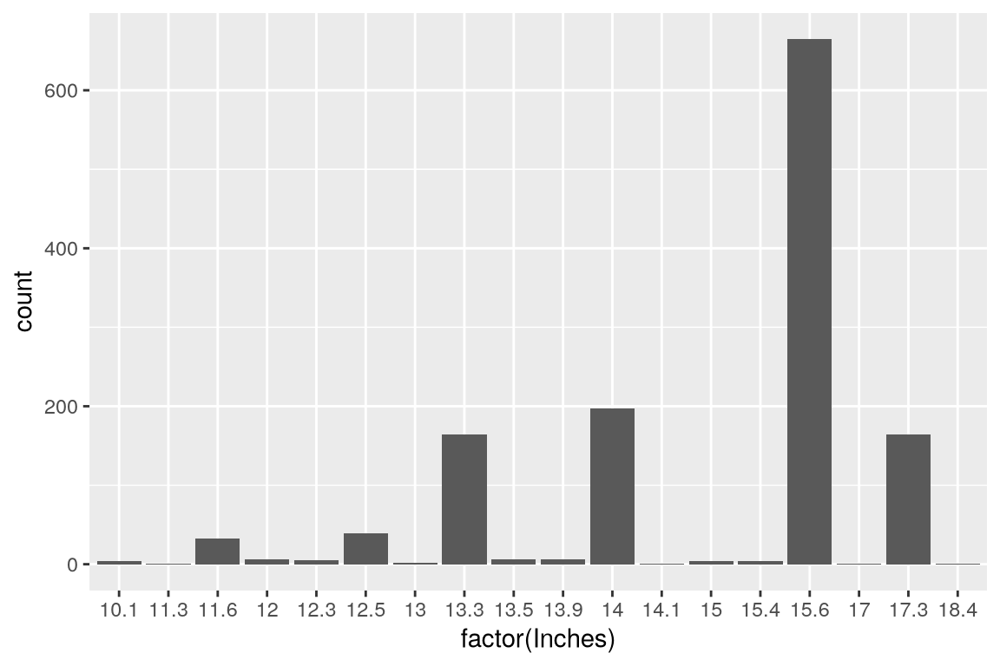
Figure 1: A bar chart with default colors
Code
p <-ggplot(data = df, mapping =aes(factor(Inches)))p +geom_bar(fill ="magenta")
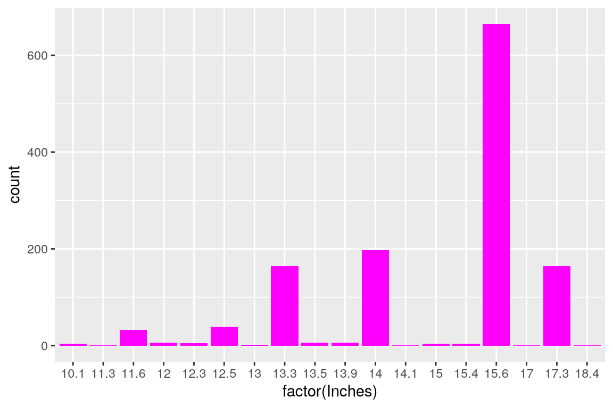
Figure 2: A bar chart with custom fill color
Code
p <-ggplot(data = df, mapping =aes(factor(Inches)))p +geom_bar(fill ="magenta", colour ="blue")
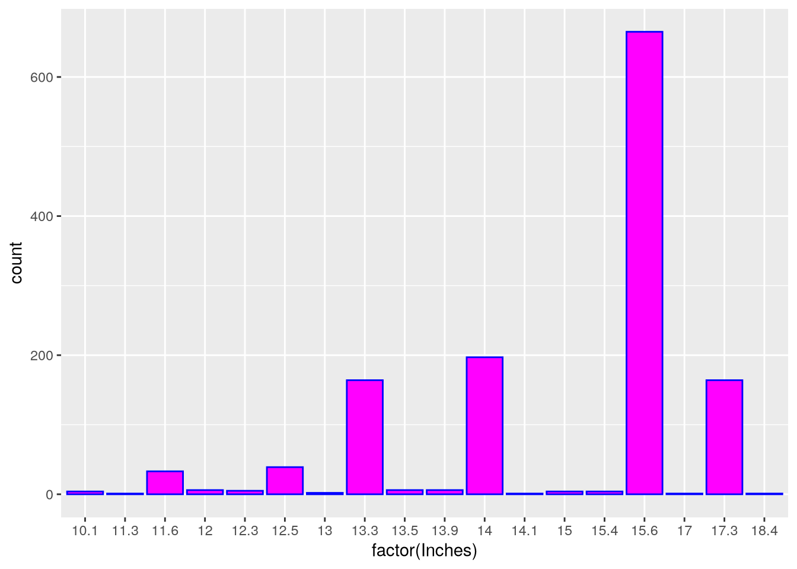
Figure 3: A bar chart with custom fill and boarder color
Code
p <-ggplot(data = df, mapping =aes(factor(Inches)))p +geom_bar(fill ="green", alpha =0.5)
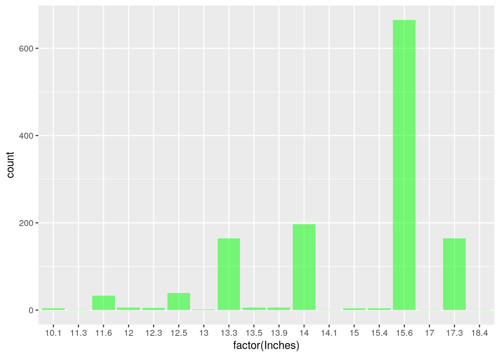
Figure 4: A bar chart with adjusted color transparency
Code
p <-ggplot(data = df, mapping =aes(factor(Inches)))p +geom_bar(fill ="green", alpha =0.1)
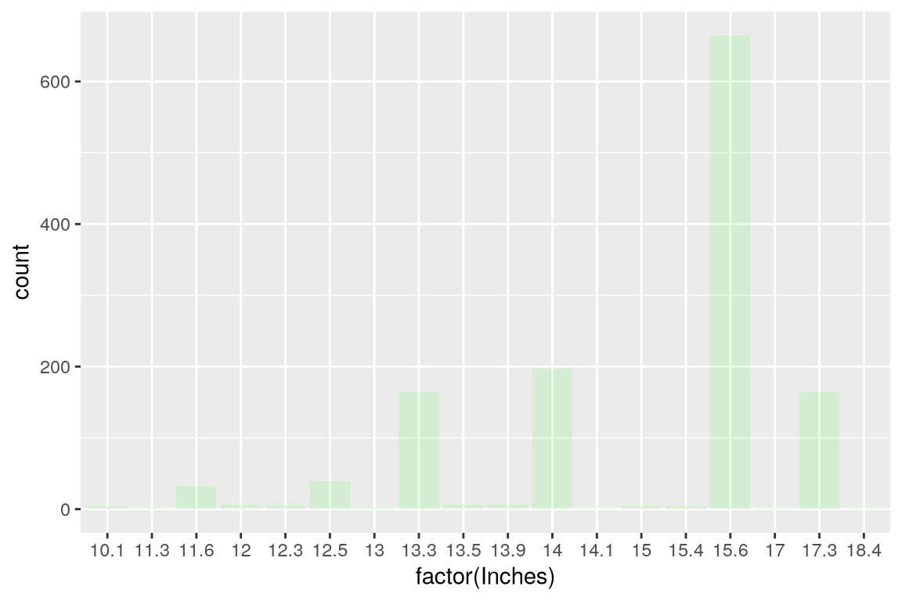
Figure 5: A bar chart with alpha = 0.1
Scales
ggplot2 comes with plenty of color scales and palettes that can help discriminate visually various data groups. Let’s suppose to expand on the visualization reported in Figure 6, dealing with the distribution of laptop price across different screen size groups. Specifically, we want to add another dimension to Figure 6 to show how laptop prices change across screen and ram size groups. By default, ggplot2 will use the hue color scale see ― Figure 7. To adopt a non-default color scale, the optional argument scale_color_* must be populated. In Figure 8, I adopt a color scale for discrete data, namely brewer. Warning: always ensure to pair discrete (continuous) color scales with discrete (continuous) variables. Otherwise, ggplot2 will return an error, e.g., Discrete values supplied to continuous scale.
Code
p <-ggplot(data = df, mapping =aes(x =factor(Inches), y = Price_euros))p +geom_boxplot()
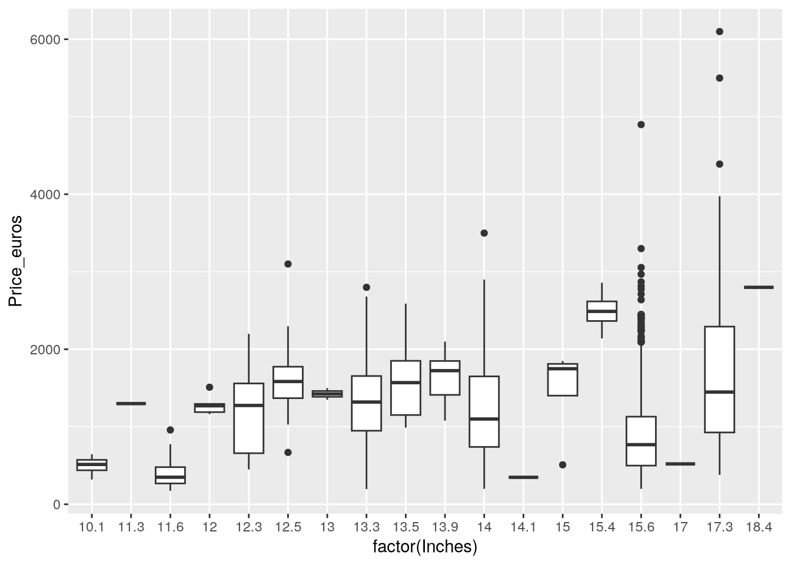
Figure 6: Distribution of laptop prices by scree size group
Code
p <-ggplot(data = df, mapping =aes(x =factor(Inches), y = Price_euros))p +geom_boxplot(aes(colour = Ram))
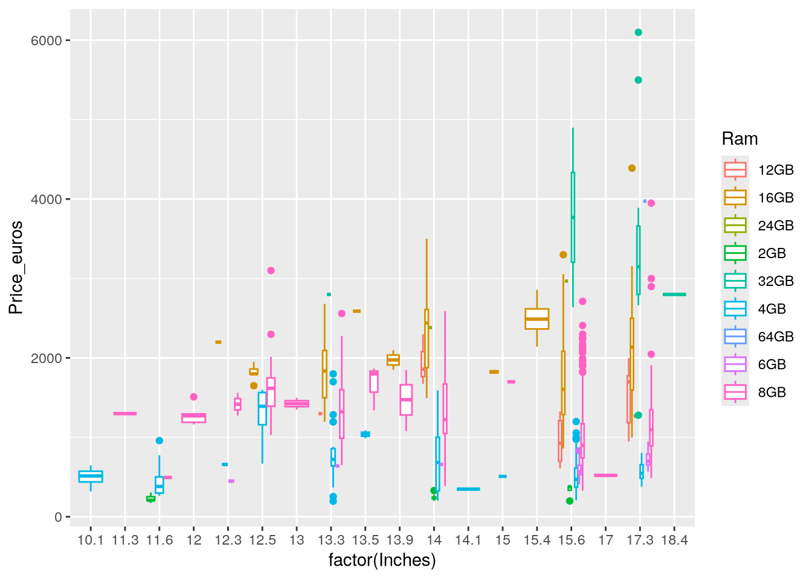
Code
p <-ggplot(data = df, mapping =aes(x =factor(Inches), y = Price_euros))p +geom_boxplot(aes(colour = Ram)) +scale_color_brewer(palette ="Paired")
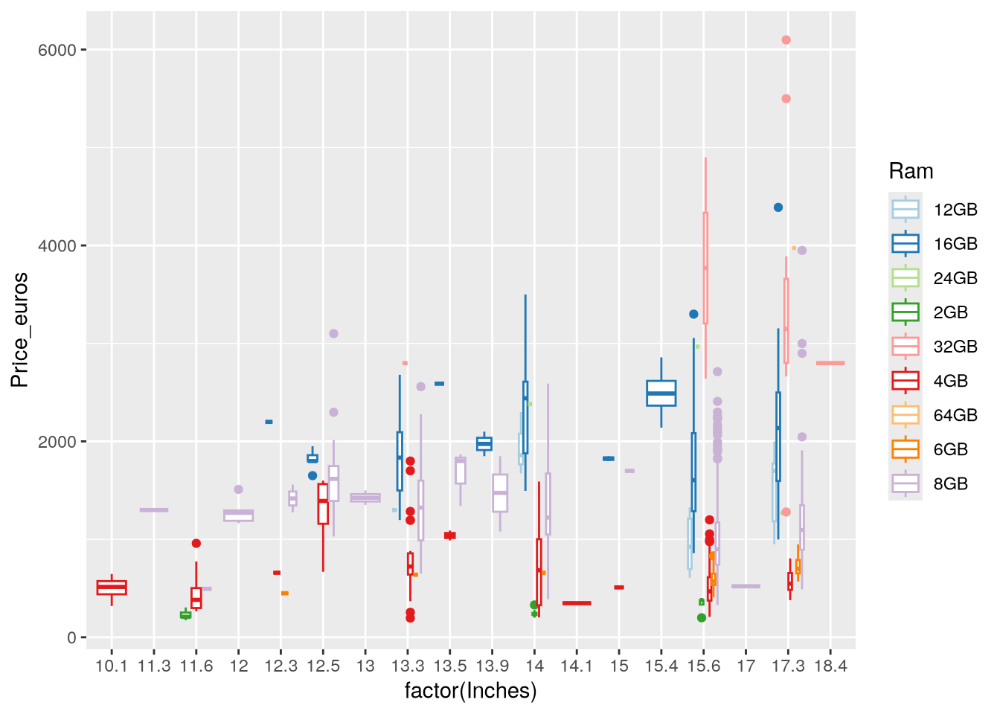
Shapes
In data visualization, shapes can play a role similar to colors, that is, to represent a ‘further’ data dimension. For example, Figure 9 and Figure 10 use color and shapes, respectively, to denote two different data series, regarding Apple and Lenovo laptops.
`summarise()` has grouped output by 'Company'. You can override using the
`.groups` argument.
Code
p <-ggplot(data = ave, mapping =aes(x =factor(Inches), y = ave_price, color =factor(Company)))p +geom_point()
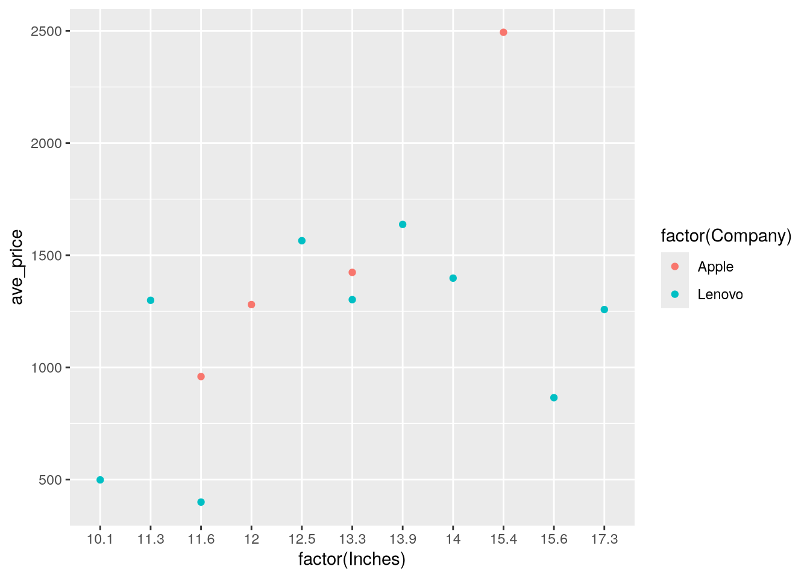
Figure 9: Colors denote companie
Code
p <-ggplot(data = ave, mapping =aes(x =factor(Inches), y = ave_price, shape =factor(Company)))p +geom_point()
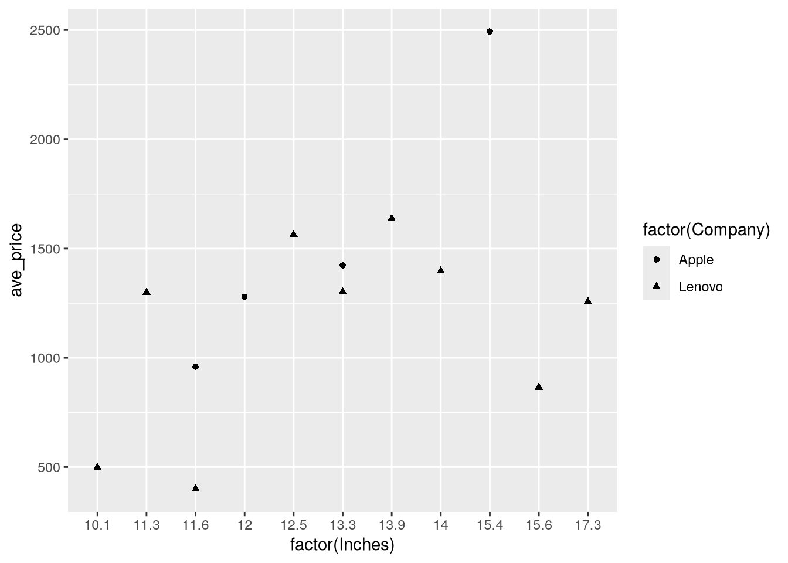
Figure 10: Shapes denote companies
At the same time, one may want to adopt a non-default shape across all data series. That would be the case of Figure 11, in which shape ‘5’ ― an empty circle ― replaces ggplot2’s default shape. Figure 12 provides a summary of the shapes available in ggplot2 and their underlying numeric codes.
Code
p <-ggplot(data = ave, mapping =aes(x =factor(Inches), y = ave_price, color =factor(Company)))p +geom_point(shape =5)
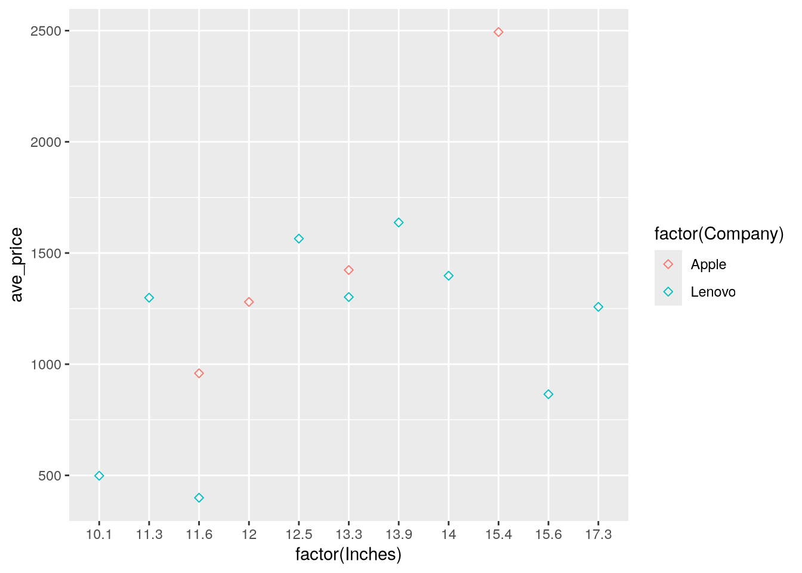
Figure 11: A geom_point() with a non-default shape